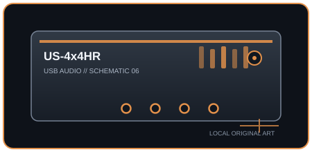

[ INDIVIDUAL COMPONENT // SOUND ]
TASCAM US-4x4HR
A four-input/four-output desktop interface with four Ultra-HDDA mic preamps, MIDI, and loopback support.

IDENTIFICATION: Manufacturer/model: TASCAM US-4x4HR USB audio/MIDI interface. Verify the full model and hardware/firmware revision on the unit; similarly named generations may have different ports, drivers, or channel counts.
Specifications
| Catalog subcategory | USB audio interfaces |
|---|---|
| Model / SKU identity | TASCAM US-4x4HR USB audio/MIDI interface; model-level identity, not a retailer bundle SKU. |
| Analog, digital I/O and host channels | Four analog XLR/TRS combo inputs (inputs 1–2 also accept instrument sources), four balanced TRS line outputs, two headphone outputs, and MIDI DIN I/O. Host-side loopback is supported by the control software. |
| Conversion, sample rate and bit depth | 24-bit; 44.1, 48, 88.2, 96, 176.4, and 192 kHz. |
| Mic preamps / phantom power | Four Ultra-HDDA mic preamps; +48 V phantom power is switched for the four mic inputs. Inputs 1–2 support Hi-Z guitar/bass connection. |
| USB generation / class compliance | USB Type-C connector carrying USB 2.0 data; class-compliant mode supports compatible mobile hosts. USB-C describes connector shape, not USB 3 speed; host power limits still apply. |
Drivers, host compatibility & latency
- Windows uses the TASCAM USB driver/ASIO; macOS uses Core Audio with current TASCAM software support. iOS/iPadOS support requires a compatible USB host adapter and sufficient power; confirm the current download matrix.
- Direct monitoring can avoid software-monitoring delay; DAW round-trip latency varies with driver, buffer, sample rate, and computer load. Minimum buffer options are not a promise of glitch-free performance on every host.
- For predictable recording, match the interface and DAW sample rates, select the model-specific manufacturer driver where required, test the intended buffer under real session load, and retain a higher-buffer fallback for dense projects.
Identification and preservation notes
Photograph the underside model label and connector panel; record serial/model identifiers, revision, firmware, included power supply, optical mode, and installed driver version. Do not infer channel count or supported sample rate from a connector or product-family name alone.
Sources & further reading
- TASCAM — US-4x4HR product pageManufacturer product specification and feature overview.
- TASCAM — US-4x4HR downloadsManufacturer-hosted driver and user-manual downloads.
Manufacturer documentation is the authority for exact revisions and supported hosts. Verify regional SKU and operating-system support against the physical unit.